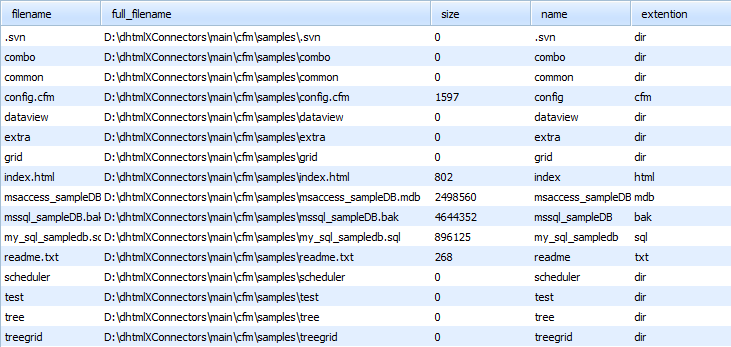

In this chapter you'll find base information concerning static loading of data:
In order to load data correctly, your 'id' field in the database must be autoincrement.
APPLICABLE TO: Grid, TreeGrid, Tree, Combo, Scheduler, DataView, Chart, Form
Loading characteristics are defined at the stage of component configuration.
There are 2 ways to specify the desired data:
When all necessary data is placed in one database table you should use the render_table() method:
<cfset grid.render_table("grid50000","item_id","item_nm,item_cd")>
Parameters:
<cfset grid.render_table("grid50000")>
That's enough to make connector implement select, insert, update and delete operations.
If your SQL statement contains more than one table, the connector won't be able to generate insert/update/delete operations correctly and you will need to make one of the following actions:
The 3rd approach is shown in the code snippet below:
<!--- code for loading data --->
<cfif grid.is_select_mode()>
<cfset grid.render_sql(
"Select * from tableA,
tableB where tableA.id=tableB.id",
"a.id","name,price,other"
)>
<!--- code for other operations - i.e. update/insert/delete --->
<cfelse>
<cfset grid.render_table("tableA","id","name,price")>
</cfif>
With such init code grid will be loaded with three columns of data from 2 tables, but during saving only data from the first table will be saved.
You are allowed to use any SQL statements to populate a dhtmlx component through dhtmlxConnector. In this case you should use the render_sql() method:
<cfset grid.render_sql(
"SELECT * from tableA INNER JOIN tableB ON tableA.id=tableB.id",
"",
"name,price"
)>
Parameters:
In case your SQL query was against a single table, it is quite probable that insert/update/delete operations do not require any additional code. dhtmlxConnector will parse your SQL and generate insert/update/delete statements based on the used table and fields' names.
The last parameter of the render_sql and render_table methods allows defining a list of fields which will be extracted from database table but won't be sent to the client side.
These fields can be used as attributes or flags, mapped to different properties of records (userdata, row styles, images, etc.).
<cfset grid.render_table("tableA","id","name,price","extra1,extra2")>
<!--- or --->
<cfset grid.render_sql(
"Select * from tableA, tableB where tableA.id=tableB.id",
"table_a_id",
"name,price,other",
"extra1,extra2"
)>
extra1 and extra2 fields will be available in all server-side events but won't be sent to the client side, and won't be included in update/insert operations.
In case of Tree and TreeGrid, both the render_sql and render_table methods accept one more parameter - relation ID. For default treegrid hierarchy it's the name of the field which will be used to link parent and child records.
<cfset tree.render_table("tableA","id","name,price","","parent_id")>
<!--- or --->
<cfset tree.render_sql(
"Select * from tableA, tableB where tableA.id=tableB.id",
"a.id",
"name,price,other",
"",
"parent_id"
)>
To make the use of extracted data handier you can use aliases for DB field names (makes sense only if you use server-side events):
<cfset grid.render_table("tableA","id","name,price(product_price)")>
<!--- or --->
<cfset grid.render_sql(
"Select *,tableA.id as aid from tableA, tableB where tableA.id=tableB.id",
"tableA.id(aid)",
"name,price(product_price),other"
)>
APPLICABLE TO: Grid, TreeGrid, Tree, Combo, Scheduler, DataView, Chart, Form
Starting from version 1.0, dhtmlxConnector allows using FileSystem as datasource. It can be used with any client-side component, but the most common use-cases are grid and tree:
<cfset grid = createObject(
"component",
"dhtmlxConnectors.GridConnector").init("","FileSystem")>
<cfset grid.render_table(
"../",
"safe_name",
"filename,full_filename,size,name,extention,date,is_folder"
)>
In the code snippet above, grid is filled with info about files in the parent folder of script location.

Parameters of the 'render-table' method:
There are 3 ways to limit files in output:
by extension type:
<cfinvoke component="dhtmlxConnectors.FileSystemTypes" method="getInstance" returnvariable="fileTypes"></cfinvoke>
<cfset fileTypes.addExtentionNot('docx')>
by regexp pattern:
<cfinvoke component="dhtmlxConnectors.FileSystemTypes" method="getInstance" returnvariable="fileTypes"></cfinvoke>
<cfset fileTypes.addPattern('com[.]*')>
by meta-type:
The following meta-types can be used:
<cfinvoke component="dhtmlxConnectors.FileSystemTypes" method="getInstance" returnvariable="fileTypes"></cfinvoke>
<cfset fileTypes.setType('web')>